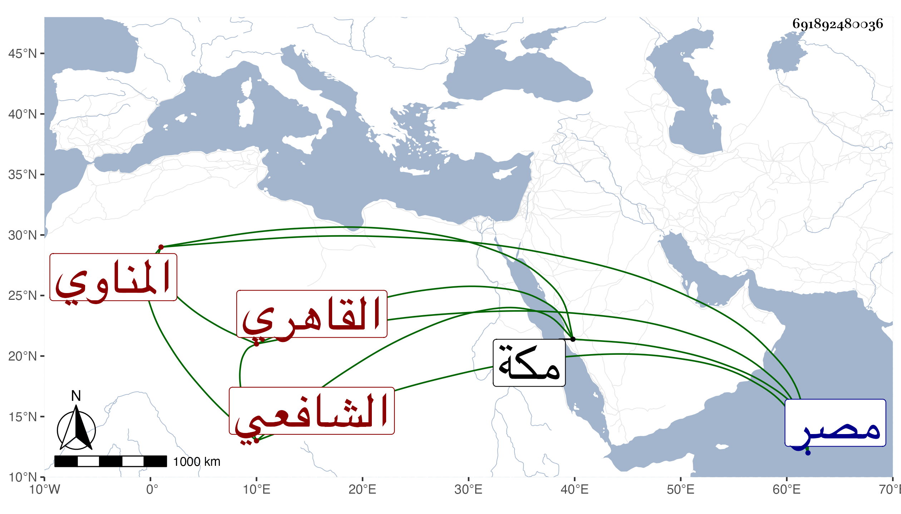

0902Sakhawi.DawLamic.ITO20230111-ara1.EIS1600.691892480036
Biography ID: 691892480036
547
زين العابدين هو محمد بن الشرف يحيى بن محمد بن محمد بن محمد المناوي الأصل القاهري الشافعي الماضي أبوه وابناه محمد وعلي ولد في ذي الحجة سنة تسع وعشرين وثمانمائة ونشأ في كنف أبيه فحفظ القرآن وبلوغ المرام وألفية النحو والبهجة وبعض ألفية العراقي وكان يصحح في محافيظه على الشهاب الخواص وعرض على شيخنا والقاياتي وابن الهمام وابن الديري في آخرين واشتغل ومعظم انتفاعه في الفقه على أبيه وأخذ في ابتدائه عن ابن حسان في المختصر وغيره وسمعته إذ ذاك يثني على حسن تصوره ويقول أنه لا يقبل الخطأ وكذا سمع على شيخنا دروسا في شرح ألفية العراقي ونحوها وسمع قبل ذلك على الزين الزركشي في صحيح مسلم وعلى الشهاب البوصيري وغيرهما ومن شيوخه الذين أخذ عنهم العلوم التقي الشمني سمع عليه في كل من الكشاف والعضد والتوضيح وشرح الشمسية ومحمد الكريمي أخذ عنه قطعة من المطول والشهاب الابشيطي أخذ عنه العروض والمنطق والصرف وحج في سنة خمسين وظهرت حينئذ براعته حيث كان يسأل عن مسائل من الحج فيحسن جوابها ولم يخالط النواب في ولاية أبيه الأولى بل كان مجانبا لهم البتة واستقر في مشيخة الطويلية بعد موت السفطي مع كونها لم تكن الا باسم ولده فلم يلبث أن انتزعها التقي القلقشندي منه بعد انقضاء الأيام الظاهرية محتجا بولاية سابقة من شيخنا له فيها هذا بعد وثوبه عليه في أيام قضاء أبيه بعناية نظام المملكة الجمالي له سرا ومع ذلك فما وصل وبعد موت التقي ارتجعها صاحب الترجمة وكذا استقر في تدريس الخروبية بمصر عوضا عن البهاء بن القطان ثم انتزعها منه ولده البدر أيضا وفي تدريس الفقه بالفاضلية ونظرها عقب ناصر الدين بن السفاح وفي تدريس القطبية المجاورة لمنزله عن البدر محمد بن الجمال عبد الله السمنودي وفي نصف تدريس الفقه بجامع الخطيري عقب البدر النسابة شريكا لفتح الدين بن البلقيني وفي تدريس المدرسة المجاورة للشافعي ونظرها وخطابة جامع عمرو وإمامته عقب والده وتصدى حينئذ للتدريس والافتاء وبنى على كتابة والده في شرح مختصر المزني وحمدت كتابته ودروسه وفتاواه حتى سمعت بعض الفضلاء من طلبة والده يرجح حسن تصوره على تصور أبيه وقال لي صهره البرهان بن أبي شريف ما رأيت أحسن إدراكا للفقه منه كل ذلك مع حسن الشكالة ووفور العقل والتواضع مع الشهامة وقلة الكلام والحشمة والتجمل والفتوة والكرم وقد أعرض عن راتبه في اللحم بديوان الوزر قبل موته تعففا وكان كأبيه كثير الاجلال لي وراسلني وأنا بمكة يعلمني بوفاة أبيه ويستميلني إليه وكنت معه على ما يحب وهو القائم بالكف عن دفن الخطيب أبي الفضل النويري بقبة الإمام الشافعي بعد أن حفر له حيث حرك كاتب السر وغيره لذلك ولم يلبث بعد أبيه أن مات على أحسن حال من تعبد وقيام وصيام في يوم الثلاثاء سادس شوال سنة ثلاث وسبعين ودفن عند والده بالقرب من ضريح الإمام الشافعي وتأسف كثيرون على فقده رحمه الله وإيانا .
